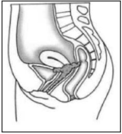
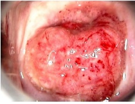
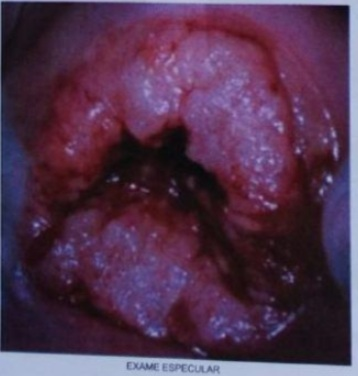

Questão 1 · Câncer de colo do útero · 4000183452Mulher de 25 anos chega à emergência ginecológica, com quadro de sangramento genital com odor desagradável há vários dias. Informa sangramento durante atividade sexual. O exame ginecológico revela tumoração cervical de 06 cm, restrita ao colo uterino. Vagina e paramétrios estão livres. Não possui exames complementares. Considerando o quadro acima, no momento, qual o provável estadiamento até o momento e tratamento?
A Ib3, radioterapia
B Ib1, radioterapia
C IIa1, cirurgia Piver tipo 5
D IIIa, radioterapia
E Ia2, cirurgia Piver tipo 3
Questão 2 · Estadiamento · Tratamento · 4000183157Mulher, 47 anos de idade, deu entrada no PS com crise hipertensiva. Exames complementares revelaram ureia 60mg/dL e creatinina de 7 mg/dL, US de vias urinárias com dilatação ureteral bilateral acentuada. Refere diagnóstico recente de carcinoma epidermóide de colo de útero, ainda sem tratamento. A conduta mais adequada do ponto de vista oncológico é:
A radioterapia associada a quimioterapia sensibilizadora.
B cirurgia de Werthein Meigs.
C traquelectomia radical e parametrectomia.
D imunoterapia com pembrolizumabe (anti PD-L1).
Questão 3 · Câncer de colo do útero · 4000182959Mulher de 49 anos foi submetida à histerectomia devido a dor no baixo ventre e identi cação de massa pélvica. Exame macroscópico da peça cirúrgica: imagem. As características macroscópicas da imagem favorecem o diagnóstico de:

A doença inflamatória pélvica com cicatrizes extensas.
B teratoma adulto benigno com áreas de necrose.
C cistos de Naboth com infecções recorrentes.
D câncer avançado do colo do útero.
Questão 4 · Estadiamento · Diagnóstico · 4000182796Assinale a alternativa que preenche, correta e respectivamente, as lacunas do parágrafo abaixo. Paciente de 42 anos, casada e com 3 lhos, em uso de DIU de cobre, veio à consulta com queixas de sangramento intermitente. Informou ter realizado a última revisão ginecológica há 5 anos (em atraso devido à pandemia). Ao exame físico, a pressão arterial era de 130/85 mmHg, o peso, de 60 kg, e a altura, de 168 cm; mamas, abdômen e vulva não apresentaram particularidades. O exame especular indicou colo com lesão de aspecto tumoral, medindo 1 cm. Foi realizada .......... . Com base no resultado, .......... , foi indicada .......... .
A coleta de material para exame citopatológico – lesão intraepitelial de alto grau – conização
B colposcopia – lesão sugestiva de câncer invasor – histerectomia extrafascial
C biópsia – carcinoma invasor – realização de estadiamento
D biópsia – adenocarcinoma invasor – histerectomia extrafascial
Questão 5 · Estadiamento · Tratamento · 4000182275Mulher de 38 anos realizou biópsia de colo uterino que evidenciou carcinoma escamoso. Ao examinála, verifica-se uma lesão de 6cm limitada ao colo, não acometendo a vagina. A ressonância magnética de pelve não evidenciou comprometimento parametrial ou linfonodal. A indicação terapêutica é de:
A laparotomia exploradora
B histerectomia radical
C conização clássica
D radioquimioterapia
Questão 6 · Estadiamento · 4000181517Com relação ao estadiamento do câncer de colo uterino, assinale as alternativas abaixo. I. – Recomenda-se, se disponível, tomogra a computadorizada por emissão de pósitrons (PET-TC) nas pacientes em estádio > IB2, principalmente na suspeita de envolvimento linfonodal. II - O exame de toque retal se mostra superior ao estudo por ressonância na avaliação dos paramétrios. III - Naquelas que apresentem sinais sugestivos de invasão de bexiga ou reto pelos exames de imagem, devem-se realizar cistoscopia e retossigmoidoscopia, respectivamente. Sobre esta situação selecione a opção correta.
A As afirmativas I e II são verdadeiras. A afirmativa III é falsa.
B As afirmativas I e III são verdadeiras. A afirmativa II é falsa.
C As afirmativas II e III são verdadeiras. A afirmativa I é falsa.
D As afirmativas I, II e III são verdadeiras.
E As afirmativas I, II e III são falsas.
Questão 7 · Estadiamento · Tratamento · 4000173563Mulher de 30 anos, G4P4, todos os partos vaginais. Procurou o ambulatório de ginecologia com queixa de sangramento durante o ato sexual e secreção vaginal com odor desagradável. O quadro teve início há quatro meses. Durante o exame, foi encontrado um tumor restrito ao colo uterino, com 3,0 cm no maior diâmetro, sem comprometimento parametrial. Exames laboratoriais normais. A propedêutica de imagem revelou tumoração restrita à região cervical sem demais alterações. De acordo com o quadro acima, assinale a alternativa correspondente ao estadiamento e à conduta mais adequada.
A Ia1/conização
B Ib1/traquelectomia
C Ib2/Wertheim-Meigs
D Ib3/radioterapia
E Ia2/CAF
Questão 8 · Padrões de disseminação · 4000170614Um estudante de medicina encontra-se ansioso, pois fará a prova nal de anatomia do semestre e precisa acertar todas as questões. O tema escolhido pelo professor foi anatomia da cavidade pélvica feminina. Com base nesse caso hipotético, é correto afirmar que, para atingir seu objetivo, o estudante deverá saber que
A os vasos linfáticos do corpo e do colo do útero drenam para os linfonodos ilíacos internos e externos.
B as tubas uterinas são irrigadas exclusivamente pelas artérias ováricas.
C o istmo é a porção mais larga da tuba uterina.
D o eixo longo do útero normalmente é inclinado para a frente, sobre o eixo longo da vagina, posição conhecida como anteflexão.
E a artéria uterina cruza o ureter e alcança o colo uterino no nível de seu óstio externo.
Questão 9 · Câncer de colo do útero · 4000170038Mulher de 46 anos apresenta sangramento vaginal em grande quantidade há 3 dias. Relata irregularidade menstrual com presença de sangramento intermenstruo recorrente, de moderada quantidade, há 2 anos, além de sinusorragia e secreção vaginal de forte odor de longa data. AP: G5P3A2C2. Exame especular: moderada quantidade de sangramento vaginal, lesão exofítica friável com aproximadamente 2 cm de diâmetro. Toque vaginal: lesão nodular endurecida, con nada a cérvix uterina, útero e anexos de difícil delimitação, fundos de saco vaginais livres. Toque retal: paramétrios livres. Exames laboratoriais: Hb 6,8 g/dL, Ht 27%, ureia 32 mg/dL, creatinina 0,8 mg/dL. A conduta correta é:
A citologia oncótica cervical, conização e radioterapia.
B citologia oncótica cervical, colposcopia e abordagem cirúrgica.
C colposcopia, biópsia da lesão, radioterapia e quimioterapia.
D biópsia da lesão, tomografia computadorizada e abordagem cirúrgica.
Questão 10 · Diagnóstico · 4000169550Mulher de 26 anos vem à consulta para rastreamento do câncer do colo do útero. Refere nunca ter realizado exame ginecológico antes. Ao exame, identi ca-se massa friável exofítica de 3cm no colo do útero, com ulceração. Qual o próximo passo para o diagnóstico da lesão?
A Exame citopatológico do colo uterino.
B Biópsia incisional da lesão exofítica.
C Histerectomia simples vaginal.
D Conização do colo do útero com alça de alta frequência.
Revisar: possível letra faltando em enunciado
Questão 11 · Padrões de disseminação · 4000168906Entre os tipos de cânceres que acomete a mulher, o terceiro mais frequente é o câncer de colo de útero, e o tipo mais comum é o carcinoma escamoso ou espinocelular. Qual a via de propagação mais frequente dessa neoplasia?
A Linfática.
B Por contiguidade.
C Venosa.
D Arterial.
Questão 12 · Câncer de colo do útero · 4000168286Paciente de 38 anos teve confirmado o diagnóstico de adenocarcinoma de colo de útero. Consultou com ginecologista oncológico para receber informações a respeito de seu diagnóstico e definir o tratamento. Assinale a assertiva correta sobre o câncer de colo de útero.
A As neoplasias intraepiteliais cervicais de alto grau apresentam percentual significativo de progressão para neoplasias invasoras ao longo do tempo, justificando-se, assim, o tratamento dessas lesões quando diagnosticadas.
B A disseminação é principalmente hematogênica.
C O estadiamento, segundo a FIGO, envolve principalmente a utilização de ressonância magnética com contraste para identificar o crescimento local do tumor.
D O diagnóstico deve estar errado, pois a paciente não se encontra na faixa etária considerada de risco para câncer de colo de útero.
Questão 13 · Câncer de colo do útero · 4000166600O câncer de colo uterino e as suas lesões precursoras ainda são incidentes no nosso meio, e são objeto de várias campanhas governamentais dirigidas à saúde da mulher. Sobre essa patologia, assinale a alternativa correta.
A O HPV 16 é o mais encontrado nas neoplasias intraepiteliais (NIC) 2 e 3 e em quase metade das mulheres com câncer de colo.
B Mesmo nos tumores evidentes clinicamente, a colposcopia do colo uterino está indicada para melhorar a acurácia diagnóstica.
C O tratamento cirúrgico radical pode ser indicado até estádios IB.
D O adenocarcinoma tem diminuído sua proporção em relação ao carcinoma de células escamosas, e seu pico de incidência é na quinta década de vida.
Questão 14 · Estadiamento · Tratamento · 4000166251Mulher, 48 anos de idade, foi admitida no PS com diagnóstico de tromboembolismo pulmonar agudo. Apresenta oligúria e sangramento vaginal em moderada quantidade. Exame físico: presença de massa no colo do útero, medindo 6 cm, friável, necrótica, sangrante, com forte odor pútrido, ocupando fórnices vaginais. Exames laboratoriais: Hb 5,4 g/dL; Ht 12,2%; Ureia 245 mg/dL; Creatinina 7,5 mg/dL. US de rins e vias urinárias: dilatação ureteral bilateral acentuada. Qual é a conduta mais adequada, após a compensação clínica?
A Derivação urinária com duplo J ou nefrostomia; cirurgia de Wertheim Meigs.
B Derivação urinária com duplo J ou nefrostomia, radio e quimioterapia.
C Histerectomia total abdominal com salpingectomia bilateral.
D Encaminhamento para ambulatório de cuidados paliativos.
Questão 15 · Tratamento · 4000165118Nas pacientes diagnosticadas com carcinoma do colo uterino, a opção de tratamento inicial mais adequada, varia de acordo com o estadiamento clínico. Sobre esta situação selecione a opção correta. I - Histerectomia total é o tratamento recomendado para pacientes que apresentam tumor com invasão de até 3 mm, sem invasão linfática e vascular, e sem dissecção linfonodal, pois o risco de metástases linfonodais é < 1%. II - Para tumores com invasão acima de 3 mm ou com invasão linfática e vascular, o tratamento de rotina deve ser a histerectomia radical associada à técnica do linfonodo sentinela ou linfadenectomia pélvica bilateral, pois o risco de metástases linfonodais é de cerca de 5%. III - A conização pode ser uma opção para pacientes que desejam manter a fertilidade, mas que apresentam tumores com invasão menor que 3 mm, sem invasão linfática e vascular, e margens livres.
A As afirmativas I e II são verdadeiras. A afirmativa III é falsa.
B As afirmativas I e III são verdadeiras. A afirmativa II é falsa.
C As afirmativas II e III são verdadeiras. A afirmativa I é falsa.
D As afirmativas I, II e III são verdadeiras.
E As afirmativas I, II e III são falsas.
Questão 16 · Histopatologia · 4000164699Qual o tipo histológico mais comum no câncer do colo do útero?
A Tumores adenoescamosos
B Carcinoma de células escamosas
C Carcinoma basocelular
D Rabdomiossarcoma
E Adenocarcinoma
Questão 17 · Estadiamento · 4000164428Paciente de 35 anos apresenta diagnóstico de câncer do colo do útero com estadiamento IB1 ( Gynecology and Obstetrics indicada para este caso é
A tomografia por emissão de pósitrons combinada com tomografia computadorizada.
B ressonância magnética nuclear da pelve.
C ultrassonografia transretal.
D tomografia computadorizada de abdômen e pelve.
Questão 18 · Estadiamento · 4000163463De acordo com estadiamento do câncer cervical da FIGO (Federação Internacional de Ginecologia e Obstetrícia) 2018, é correto afirmar:
A Estadio IA2: profundida da invasão menor que 3 mm.
B Estadio IIA1: carcinoma invasor com dimensões acima de 4 cm, envolvendo 1/3 superior de vagina sem envolvimento parametrial.
C Estadio IIIC1: metástases em linfonodos pélvicos somente.
D Estadio IIIB: carcinoma envolvendo 1/3 inferior de vagina, mas não parede pélvica.
E Estadio IV B: disseminação para órgãos pélvicos adjacentes.
Questão 19 · Estadiamento · Tratamento · 4000146932Paciente de 36 anos, casada, G3 P3(N)A0, refere sinusorragia há 6 meses, sendo que nos últimos 2 meses tem evoluído com sangramento intermitente entre as menstruações. Ao exame físico lesão vegetante de colo, aparentemente restrita ao colo e sem envolvimento de paramétrios ou vagina. A Biópsia dirigida revelou tratar-se de carcinoma epidermoide de colo uterino grau 2. Assim sendo, de acordo com o estadiamento clínico, a idade e diagnóstico, a melhor conduta deve ser:
A Radioterapia pélvica com quimioterapia sensibilizante, tendo em vista a gravidade da doença.
B Histerectomia total com salpingectomia e preservação de ovários, tendo em vista se tratar de paciente jovem.
C Histerectomia total ampliada (Wertheim Meigs incluindo salpingooforectomia bilateral, tendo em vista a gravidade da doença.
D Histerectomia Total Ampliada (Wertheim Meigs com preservação de ovários, seguida de Radioterapia pélvica tendo em vista a gravidade da doença.
E Histerectomia Total Ampliada (Wertheim Meigs com possibilidade de preservação de ovários, tendo em vista a idade da paciente.
Questão 20 · Estadiamento · Tratamento · 4000146356P.R.S; 53 anos, prole constituída, citologia oncótica, apresentando lesão intraepitelial escamosa de alto grau e colposcopia alterada. Realizada biópsia de colo uterino. Resultado do anatomopatológico: suspeita de microinvasão. Indicada conização, e o resultado histopatológico da peça foi carcinoma escamoso de 15 mm no maior diâmetro. Assinale a alternativa que apresenta a conduta correta para o caso.
A Histerectomia radical com linfadenectomia pélvica.
B Traquelectomia.
C Quimioterapia neoadjuvante.
D Radioterapia.
E Exenteração pélvica.
Questão 21 · Câncer de colo do útero · 4000145499Existem muitos fatores de risco para o câncer do colo do útero: primeira relação sexual em idade jovem (menos de 16 anos), múltiplos parceiros sexuais, tabagismo, raça, paridade elevada, baixa condição socioeconômica e imunossupressão crônica. A respeito do câncer de colo uterino, assinale a alternativa CORRETA:
A A profundidade da lesão é um importante preditor de metástase para linfonodos pélvicos
B A taxa de falso-negativo da colpocitologia oncótica no câncer invasor é muito baixa
C Dor pélvica crônica é o sintoma mais comum nas pacientes acima de 50 anos
D O câncer de colo de útero é uma doença de estadiamento cirúrgico
Questão 22 · Estadiamento · Tratamento · 4000143328G.L.P., 39 anos, procura serviço médico com queixa de sangramento intermitente, dor pélvica crônica, sinusiorragia, apatia. Ao exame físico geral, paciente encontra-se emagrecida e descorada. Ao exame especular, observa-se tumoração em colo uterino exofídica, característica de neoplasia maligna do colo uterino. A figura a seguir mostra a extensão da lesão e o estágio de acordo com a FIGO (Federação Internacional de Ginecologia e Obstetrícia). Com base nesse quadro, o estadiamento clínico e o tratamento adequado são

A IIA, cirurgia de Wherteim-Meigs.
B IIB, radioterapia.
C IIB, cirurgia de Wherteim-Meigs e radioterapia.
D IVA, quimiorradioterapia.
E IVB, quimioterapia.
Questão 23 · Estadiamento · Nomenclatura citológica brasileira · 4000142519Para diagnóstico definitivo de carcinoma in situ do colo do útero, são necessários
A colpocitologia com lesão de alto grau e colposcopia evidenciando lesão acetobranca.
B colpocitologia com lesão de alto grau e colposcopia com biópsia evidenciando carcinoma
C colpocitologia com lesão de alto grau, colposcopia com biópsia evidenciando carcinoma in situ do colo e cortes histológicos seriados de peça proveniente de cone com acometimento da membrana basal e com margens livres.
D colpocitologia com lesão de alto grau, colposcopia com biópsia evidenciando carcinoma in situ do colo e cortes histológicos seriados de peça proveniente de cone sem acometimento da membrana basal e sem margens livres.
E colpocitologia com lesão de alto grau, colposcopia com biópsia evidenciando carcinoma in situ do colo e cortes histológicos seriados de peça proveniente de cone sem acometimento da membrana basal e com margens livres.
Questão 24 · Estadiamento · 4000142023Paciente, 20 anos, nuligesta, foi ao ambulatório com queixa de sinusiorragia, corrimento vaginal e dor pélvica. Realizou biópsia de colo que evidenciou carcinoma escamoso estádio 1 A. Qual o tratamento indicado para essa paciente?
A Conização a frio
B Histerectomia radical com linfadenectomia pélvica
C Histerectomia com ooforectomia
D Traquelectomia
Questão 25 · Estadiamento · Diagnóstico · Tratamento · 4000141818Mulher de 30 anos, G5P5, todos os partos normais. Chega à emergência ginecológica com quadro de sangramento pela vagina, há uma semana. Nega corrimento genital e febre. O exame ginecológico revelou presença de tumor em colo uterino de seis centímetros de diâmetro, friável e sangrante. O tumor compromete o terço superior da vagina, no entanto não atinge paramétrios. Traz consigo exame ultrassonográfico que revela hidronefrose. De acordo com o cenário descrito acima, assinale a alternativa que melhor destaca a principal suspeita diagnóstica com o estadiamento, a propedêutica e a conduta.
A Neoplasia de colo IIIB, biópsia cervical, radio e quimioterapia.
B Neoplasia de colo IIIA, citologia oncótica, radio e quimioterapia.
C Neoplasia de colo IIIA, colposcopia, histerectomia ampliada.
D Neoplasia de colo IIB, biópsia cervical, histerectomia radical.
E Neoplasia de colo IIA, biópsia cervical, radio e quimioterapia.
Questão 26 · Conização · Sintomas · Exame f ísico · 4000140844Paciente de 40 anos de idade refere corrimento vaginal sanguinolento e odor pronunciado há cerca de 5 meses. Refere ciclos menstruais mensais regulares, porém com di culdade de identi cá-los devido ao sangramento irregular dos últimos meses. Refere vida sexual ativa, com parceiro sexual vasectomizado. Quatro partos vaginais prévios (último há 7 anos). Nega co-morbidades ou uso de medicamentos. Ao exame especular observa-se a imagem a seguir. Qual é a conduta neste momento?

A Biópsia.
B Colpocitologia.
C Colposcopia.
D Pesquisa de Clamídia e Neisseria.
Revisar: possível letra faltando em enunciado
Questão 27 · Câncer de colo do útero · 4000132874O câncer de colo uterino ainda é o tumor ginecológico mais comum entre as brasileiras e desenvolve-se em uma população mais jovem em relação aos outros tumores do trato genital. Sobre esse câncer, é correto afirmar:
A O subtipo histológico adenocarcinoma é o mais prevalente e as lesões são exofíticas.
B Os sintomas são precoces e específicos, principalmente em pacientes jovens.
C O estadiamento é clínico, entretanto, pode ser ajudado nos casos iniciais pelo cone a frio.
D O estadiamento IIB inclui presença de hidronefrose por compressão do ureter pelo tumor.
Questão 28 · Câncer de colo uterino na gestação · 4000131191Uma paciente de 36 anos de idade foi atendida em primeira consulta com equipe de oncologia ginecológica, em abril de 2019, com queixa de sinusiorragia. Foi diagnosticada com adenocarcinoma de colo do útero, estágio clínico IIB. Indicou-se tratamento, porém a paciente não desejou realizálo naquele momento, retornando um ano depois, grávida (G6P4C1), com idade gestacional de 30 semanas e 3 dias, referindo di culdade para deambular e dor no quadril à esquerda. Foram, então, identificadas metástase óssea e fratura patológica, e re-estadiada para estágio clínico IVB. Após avaliações iniciais, a paciente definiu que desejava manter a gestação. Com base nesse caso clínico e nos conhecimentos médicos correlatos, julgue os itens a seguir. A paciente não possui indicação de tratamento cirúrgico para o câncer de colo do útero.
A Certo.
B Errado.
Questão 29 · Câncer de colo uterino na gestação · 4000131189Uma paciente de 36 anos de idade foi atendida em primeira consulta com equipe de oncologia ginecológica, em abril de 2019, com queixa de sinusiorragia. Foi diagnosticada com adenocarcinoma de colo do útero, estágio clínico IIB. Indicou-se tratamento, porém a paciente não desejou realizálo naquele momento, retornando um ano depois, grávida (G6P4C1), com idade gestacional de 30 semanas e 3 dias, referindo di culdade para deambular e dor no quadril à esquerda. Foram, então, identificadas metástase óssea e fratura patológica, e re-estadiada para estágio clínico IVB. Após avaliações iniciais, a paciente definiu que desejava manter a gestação. Com base nesse caso clínico e nos conhecimentos médicos correlatos, julgue os itens a seguir. Se indicado, o tratamento proposto será paliativo.
A Certo.
B Errado.
Questão 30 · Tratamento · 4000131188Uma paciente de 36 anos de idade foi atendida em primeira consulta com equipe de oncologia ginecológica, em abril de 2019, com queixa de sinusiorragia. Foi diagnosticada com adenocarcinoma de colo do útero, estágio clínico IIB. Indicou-se tratamento, porém a paciente não desejou realizálo naquele momento, retornando um ano depois, grávida (G6P4C1), com idade gestacional de 30 semanas e 3 dias, referindo di culdade para deambular e dor no quadril à esquerda. Foram, então, identificadas metástase óssea e fratura patológica, e re-estadiada para estágio clínico IVB. Após avaliações iniciais, a paciente definiu que desejava manter a gestação. Com base nesse caso clínico e nos conhecimentos médicos correlatos, julgue os itens a seguir. A paciente poderá realizar tratamento com quimioterapia.
A Certo.
B Errado.
Questão 31 · Tratamento · 4000131186Uma paciente de 36 anos de idade foi atendida em primeira consulta com equipe de oncologia ginecológica, em abril de 2019, com queixa de sinusiorragia. Foi diagnosticada com adenocarcinoma de colo do útero, estágio clínico IIB. Indicou-se tratamento, porém a paciente não desejou realizálo naquele momento, retornando um ano depois, grávida (G6P4C1), com idade gestacional de 30 semanas e 3 dias, referindo di culdade para deambular e dor no quadril à esquerda. Foram, então, identificadas metástase óssea e fratura patológica, e re-estadiada para estágio clínico IVB. Após avaliações iniciais, a paciente definiu que desejava manter a gestação. Com base nesse caso clínico e nos conhecimentos médicos correlatos, julgue os itens a seguir. A paciente não poderá realizar nenhum tipo de tratamento com radioterapia.
A Certo.
B Errado.
Questão 32 · Epidemiologia · 4000130972No Brasil o câncer de colo do útero ainda é um importante problema de saúde pública. Sobre essa doença é correto afirmar de acordo com as estimativas do INCA para 2020:
A A estimativa para o Brasil é de cerca de 55.000 casos, com predomínio na região norte e sudeste.
B Para o Paraná estima-se por volta de 5.000 casos neste ano.
C Estima-se para 2020 cerca de 18.000 mortes por esse câncer.
D Curitiba deverá ter perto de 100 casos.
Questão 33 · Estadiamento · Ginecologia · Diagnóstico · 4000129180Considere as assertivas abaixo sobre carcinoma epidermoide de colo uterino. I - As neoplasias intraepiteliais cervicais de alto grau apresentam percentual significativo de progressão para neoplasias invasoras, justificando-se, assim, o tratamento dessas lesões quando diagnosticadas. II - A disseminação do carcinoma de colo de útero é principalmente hematogênica para pulmão e fígado. III – O estadiamento do tumor não tem impacto na sobrevida livre de doença. Quais são as corretas?
A Apenas I
B Apenas II
C Apenas III
D Apenas I e II
Questão 34 · Câncer de colo do útero · 4000128423Sobre o câncer de colo, podemos afirmar: I - os carcinomas do colo do útero são carcinomas epidermoides do tipo usual, relacionados à infecção pelo HPV; II - São variantes do carcinoma epidermoide cervical: basaloide, verrucoso, papilifero e linfoepitelioma-símile; III - Além de carcinomas epidermoides cervicais, outro tipo comum é o adenocarcinoma endocervical usual; IV - A NIC1 indica uma infecção ativa por papilomavírus humano (HPV) e é considerada lesão de baixo grau com índice muito alto de regressão espontânea. Das afirmativas acima, estão corretas:
A Apenas I e II.
B Apenas I e III.
C Apenas II, III e IV.
D Apenas III e IV.
E I, II, III e IV.
Questão 35 · Etiologia Diabetes mellitus DM · 4000128403Paciente, 50 anos, do sexo feminino, portadora de hipertensão arterial sistêmica há 15 anos e diabética há 20 anos, comparece em consulta com especialista. Apresenta-se com queixa de adinamia, redução de acuidade visual, palidez cutânea e edema de membros inferiores há pelo menos seis meses. Realizava acompanhamento regular no PSF, e ainda assim não alcançava bom controle pressórico e nem glicêmico. Ao exame, apresentava: PA = 160x100mmHg, mucosas hipocoradas (++/4+), estertores crepitantes em ambos os hemitórax, abdômen globoso com Piparote positivo e edema de face e membros inferiores (++/4+). Trazia exames que mostravam anemia normocrômica e normocítica, parasitológico de fezes negativo e um sumário de urina com 2++ de proteína sem outras anormalidades. Baseado nesses dados, que exames devem ser solicitados e qual sua principal hipótese diagnóstica:
A Proteinúria de 24 horas, dosagem de ureia e creatinina; insuficiência renal crônica.
B Ecocardiograma transtorácico; insuficiência cardíaca congestiva.
C Coagulograma, Ultrassonografia abdominal; cirrose hepática.
D Ultrassonografia transvaginal; neoplasia de colo uterino.
E T4 livre e TSH; hipotireoidismo.
Questão 36 · Sintomas · Adenocarcinoma in situ e invasor · Rastreamento · 4000125782J.G.H., 51 anos, G5 P5 C0 A0, sexarca aos 12 anos de idade, sem parceiro xo, sem comorbidades, tabagista de 10 cigarros/dia e drogas ilícitas ocasionais, sem acompanhamento ginecológico há 8 anos, realizou exames de rotina com os seguintes resultados: Colpocitologia oncótica: lesão intraepitelial de alto grau (NIC III). O resultado da colposcopia com a biópsia foi a seguinte: achados colposcópicos anormais maiores (sugestivos de lesão de alto grau) com resultado anatomopatológico da biópsia: carcinoma micro invasor. A respeito desse caso de câncer de colo de útero, considere as afirmações e assinale a opção correta. 1. É o câncer ginecológico mais comum no Brasil. 2. É um câncer que realmente pode ser prevenido com os métodos atuais de rastreamento. 3. A paciente citada apresenta somente dois fatores de risco para o câncer de colo uterino. 4. O papilomavírus humano (HPV) está envolvido na carcinogênese em mais de 99% dos casos de câncer cervical. 5. A fase inicial do câncer de colo uterino geralmente é assintomática ou oligossintomática.
A Somente 1, 2, 4 e 5 estão corretas.
B Somente 1, 2 e 4 estão corretas.
C Somente 2, 4 e 5 estão corretas.
D Somente 2 e 4 estão corretas.
E Todas estão corretas.
Questão 37 · Tratamento · Estadiamento · Tratamento · 4000120278Mulher de 39 anos de idade, IIG,IIP, apresenta lesão intraepitelial de alto grau de colo do útero em exame citológico. A colposcopia identi ca área de mosaico adentrando o canal endocervical. A biópsia da lesão é compatível com microinvasão estromal. O passo seguinte é
A histeroscopia diagnóstica.
B histerectomia total.
C repetir colposcopia com estrogenioterapia.
D curetagem uterina.
E conização.
Revisar: possível letra faltando em enunciado
Questão 38 · Anticoagulação · Seguimento póstratamento · Cirurgia · 4000116652Paciente com neoplasia de colo de útero, em tratamento com radioquimioterapia, apresentando sangramento vaginal, evoluiu com dor e edema no membro inferior direito. Qual a sua conduta para tratamento no caso clínico da questão anterior?
A Filtro de veia cava.
B Anticoagulação plena com enoxeparina.
C Amputação da perna.
D Aumento da ingesta via oral de proteínas.
E Revascularização de perna direita por angioplastia.
Questão 39 · Anticoagulação · Seguimento póstratamento · Cirurgia · 4000116621Paciente com neoplasia de colo de útero, em tratamento com radioquimioterapia, apresentando sangramento vaginal, evoluiu com dor e edema no membro inferior direito. Qual a sua hipótese diagnóstica?
A Varizes de MMII.
B Edema por desproteinemia devido a neoplasia.
C Úlcera de perna direita.
D Trombose venosa profunda.
E Isquemia crítica.
Questão 40 · Estadiamento · Diagnóstico · Tratamento · 4000115395Paciente com 42 anos, último exame citológico há 6 anos. Procurou assistência devido ao fato de estar apresentando sangramento após todas a relações sexuais e dor discreta há 04 meses, e ainda, metrorragia há 2 meses. Durante o exame ginecológico evidenciou-se colo volumoso, endurecido, com áreas de sangramento que ocupa o terço superior da vagina. Paciente não permitiu realização do toque retal. O diagnóstico provável, o exame mais adequado e o tratamento mais indicado nesse caso são, respectivamente:
A Tumor endocervical, citologia endometrial e radioterapia.
B Tumor endocervical, biopsia endometrial e inserção de endoceptivo intrauterino.
C Tumor do colo uterino, biópsia do colo uterino e histerectomia total e salpingooforectomia bilateral.
D Tumor do colo uterino, citologia oncótica e hormônio terapia até o resultado.
Questão 41 · Câncer de colo do útero · 4000114519Em relação ao câncer do colo do útero, é correta a seguinte afirmação:
A o tabagismo não é um fator de risco pois recentemente se descobriu que a causa é ainfecção pelo HPV.
B o câncer do colo do útero pode se propagar por contiguidade, continuidade por vialinfática e por via hematogênica.
C o tipo histológico mais comum é o adenocarcinoma mucinoso.
D a diferenciação entre ca in situ e invasivo só pode ser feita com a colposcopia ebiópsia do colo.
E o acometimento dos paramétrios é diagnosticado pelo toque vaginal eultrassonografia transvaginal.
Revisar: possível letra faltando em alt D
Questão 42 · Fatores de risco · 4000112824Em relação à prevenção do carcinoma do colo do útero é falso:
A A coleta tríplice de colpocitologia oncótica consiste na coleta do material do fundo de saco vaginal posterior, ectocérvice e endocérvice.
B A colposcopia permite localizar no colo do útero as lesões pré malignas e o carcinoma invasivo inicial, podendo ser utilizado isoladamente como método de detecção e rastreamento desta neoplasia.
C Ao interpretar-se o teste de Schiller as áreas iodo positivas são Schiller negativas e as áreas Iodo negativas são Schiller positivas.
D A conização do colo do útero pode ser útil quando a paciente apresenta citologia oncótica compatível com carcinoma in situ ou displasia grave, não observando à colposcopia imagens suspeitas.
E Lesões macroscópicas suspeitas no colo do útero devem ser biopsiadas sem aguardar o resultado da colpocitologia oncótica.
Questão 43 · Estadiamento · 4000108122Para se tomar conduta em caso de câncer de colo do útero, o estadiamento é muito importante. Em uma mulher cujo câncer invadiu o paramétrio, porém não até a parede pélvica, o estadio é:
A I B.
B II A.
C II B.
D III A.
E III B.
Questão 44 · Epidemiologia · 4000103791O secretário municipal de saúde de uma pequena cidade do interior decidiu investir mais recursos na prevenção primária do câncer de colo do útero. Qual das alternativas a seguir pode ser classificada como estratégia de prevenção primária desta doença?
A Implantação de serviço de cirurgia oncológica no município.
B Vacinação de adolescentes sem vida sexual ativa.
C Aumento do número de exames de colposcopia para cada mulher.
D Rastreamento por meio do exame de Papanicolau a cada 6 meses.
E Implantação de serviço de radioterapia e quimioterapia.
Questão 45 · Estadiamento · 4000100833Paciente, 45 anos, com carcinoma espinocelular de colo uterino e dilatação pielocalicial direita por obstrução ureteral distal. Qual dos seguintes exames apresentará o achado que está associado à obstrução ureteral?
A Toque vaginal.
B Exame especular.
C Colposcopia.
D Sedimento urinário.
E Toque retal.
Questão 46 · Estadiamento · Tratamento · 4000095591Paciente de 40 anos de idade com carcinoma espinocelular de colo do útero visível no exame especular com cerca de 5cm, sangrante em pequena quantidade. A lesão compromete o colo e a vagina, até cerca de 2cm do introito. Não foi realizado toque vaginal por receio de aumentar o sangramento. Com essas informações, o tratamento inicial proposto deve ser?
A Traquelectomia com radioterapia.
B Quimio e radioterapia sem cirurgia.
C Cirurgia de Wertheim-Meigs e quimioterapia.
D Histerectomia total abdominal, quimio e radioterapia.
Questão 47 · Vacinas · Epidemiologia · 4000095312O Ministério da Saúde do Brasil recomenda como medida de prevenção do câncer de colo do útero:
A Vacinação tetravalente contra HPV em adolescentes femininas, imunossuprimidos, usuário de drogas injetáveis e profissionais do sexo.
B A cauterização de lesões intraepiteliais de alto grau quando há detecção de HPV em mulheres acima de 35 anos de idade.
C Detecção precoce de lesões precursoras com exame citológico cervicovaginal em mulheres entre 25 e 64 anos de idade.
D Colposcopia com biópsia dirigida nos casos células escamosas atípicas de significado indeterminado em exame citológico de mulheres com mais de 35 anos de idade.
Questão 48 · Estadiamento · Tratamento · 4000093335Uma mulher de 52 anos apresenta carcinoma de colo uterino. No exame especular visualiza-se massa no colo de 5 cm, invadindo 2 cm da parte superior da vagina à esquerda. Biópsia revela invasão estromal maior que 3 mm. Toque vaginal e retal: paramétrios livres. Todos os demais exames indicados para estadiamento estão normais. Assinale a alternativa que indica, respectivamente, o estadiamento clínico (FIGO) e o tratamento indicado.
A Estágio I b – cirurgia
B Estágio II a – cirurgia
C Estágio II b – radioterapia
D Estágio III a – cirurgia
E Estágio III b – radioterapia
Questão 49 · Tratamento · 4000084377Mulher de 50 anos, GIII PIII é encaminhada pelo SISREG ao ambulatório de patologia cervical com laudo citopatológico de NIC III. A colposcopia evidenciou vasos atípicos. Realizado biópsia dirigida com laudo histopatológico de microinvasão. A conduta preconizada, nesse caso, é:
A conização a frio
B histerectomia total abdominal
C histerectomia radical modificada com linfadenectomia pélvica
D histerectomia total radical modificada sem linfadenectomia pélvica
Questão 50 · Estadiamento · Diagnóstico · Tratamento · 4000052318Paciente de 40 anos, casada, G5P5, IMC=27,0; Método contraceptivo = laqueadura tubária, procura serviço médico com queixa de sinusorragia, sangramento uterino anormal e corrimento vaginal fétido que iniciaram há 06 meses. É portadora de diabetes mellitus e hipertensão arterial. O exame físico ginecológico com introdução de espéculo mostrou sangramento vaginal moderado e presença de tumor vegetante atingindo até terço inferior da vagina. Baseado nesses dados, escolha a opção que traz a conduta mais adequada para o caso.
A Solicitar ultrassonografia transvaginal para investigação inicial do sangramento uterino anormal.
B Paciente de alto risco para câncer do endométrio - solicitar histeroscopia diagnóstica.
C Prescrever ácido tranexâmico IM para cessar o sangramento e em seguida realizar exame de papanicolau para adequada avaliação do colo uterino.
D Realizar biópsia da lesão vaginal.
E Solicitar Tomografia Computadorizada de pelve para estadiamento do tumor.
Questão 51 · Estadiamento · 4000047105Mulher de 30 anos, G5 P5, com queixa de sangramento genital durante o ato sexual, há três meses. Durante o exame ginecológico, foi observada lesão cervical de um centímetro em seu maior diâmetro, restrita ao colo uterino. A vagina se encontra livre de lesões, assim como os paramétrios. Considerando a possibilidade diagnóstica de neoplasia cérvice uterina, assinale a alternativa que representa o estadiamento adequado.
A Ia1
B Ib3
C Ib1
D IIa
E IIb
Questão 52 · Tratamento · 4000032260Paciente de 45 anos, com citologia cérvico-vaginal positiva para células neoplásicas escamosas, foi submetida a colposcopia com biópsia do colo que revelou carcinoma de células escamosas invasor. O estadiamento clínico do tumor foi compatível com Estágio IB1. Em relação à conduta neste caso, é CORRETO afirmar que:
A Está indicada a traquelectomia clássica para completar o estadiamento e orientar o tratamento definitivo.
B Está indicada Quimio-irradiação neo-adjuvante.
C Está indicada a cirurgia de Wertheim-Meigs.
D Está indicada a Ressonância Magnética, ou Tomografia Computadorizada da pelve e do abdome. Se não houver sinais de comprometimento linfonodal, realizar histerectomia total com anexectomia bilateral.
Questão 53 · Padrões de disseminação · 4000025342O câncer de colo uterino pode-se propagar diretamente por continuidade e por contiguidade. A propagação indireta será:
A Para paramétrios.
B Por via linfática e hemática.
C Pare bexiga e reto.
D Para paracolpos.
Questão 54 · Estadiamento · Tratamento · 4000024109Considere um paciente de 88 anos de idade, hipertensa, diabética tipo 2, em uso de insulina e com quadro de insu ciência cardíaca NYHA classe III. Ela foi diagnosticada com câncer de colo uterino estágio IIIB pela classificação da FIGO (2009). Na última ecografia de aparelho urinário, foi visualizada hidronefrose moderada à direita. Com base nesse caso clínico e nos conhecimentos médicos correlatos, julgue o item a seguir. Considerando o status funcional da paciente, as comorbidades envolvidas e o tratamento proposto para a neoplastia em questão, deve-se introduzir a ideia de cuidados paliativos com familiares e paciente, visando, entre outros, ao bem-estar, apesar da evolução da doença, e ao manejo álgico adequado.
A Certo.
B Errado.
Questão 55 · Estadiamento · 4000024104Considere um paciente de 88 anos de idade, hipertensa, diabética tipo 2, em uso de insulina e com quadro de insu ciência cardíaca NYHA classe III. Ela foi diagnosticada com câncer de colo uterino estágio IIIB pela classificação da FIGO (2009). Na última ecografia de aparelho urinário, foi visualizada hidronefrose moderada à direita. Com base nesse caso clínico e nos conhecimentos médicos correlatos, julgue o item a seguir. Os achados de hidronefrose ou rim não funcionante devem ser incluídos no estadiamento no câncer de colo uterino, quando excluídas outras causas.
A Certo.
B Errado.
Questão 56 · Estadiamento · Tratamento · 4000024096Considere um paciente de 88 anos de idade, hipertensa, diabética tipo 2, em uso de insulina e com quadro de insu ciência cardíaca NYHA classe III. Ela foi diagnosticada com câncer de colo uterino estágio IIIB pela classificação da FIGO (2009). Na última ecografia de aparelho urinário, foi visualizada hidronefrose moderada à direita. Com base nesse caso clínico e nos conhecimentos médicos correlatos, julgue o item a seguir. A paciente pode ser tratada com quimiorradioterapia primária.
A Certo.
B Errado.
Questão 57 · Fatores de risco · 4000024049Uma paciente de 50 anos de idade vai a consulta em UBS com queixa de corrimento vaginal acinzentado e com odor fétido na última semana. Refere também que gostaria de realizar check-up, pois não se consulta com médico há mais de 10 anos e está preocupada, pois a própria mãe foi diagnosticada com câncer de mama quando tinha 68 anos de idade. História médica pregressa: G6P6A0, diagnóstico prévio de sí lis tratada recentemente e coitarca aos 14 anos de idade. Tabagista de um maço de cigarro ao dia desde os 15 anos de idade. Considerando esse caso clínico e os conhecimentos médicos relacionados à saúde da mulher, julgue o item a seguir. O fato de ter apresentado quadro de sí lis anteriormente não eleva o risco de a paciente vir a desenvolver câncer de colo uterino.
A Certo.
B Errado.
Questão 58 · Populaçãoalvo e intervalo · Fatores de risco · 4000024041Uma paciente de 50 anos de idade vai a consulta em UBS com queixa de corrimento vaginal acinzentado e com odor fétido na última semana. Refere também que gostaria de realizar check-up, pois não se consulta com médico há mais de 10 anos e está preocupada, pois a própria mãe foi diagnosticada com câncer de mama quando tinha 68 anos de idade. História médica pregressa: G6P6A0, diagnóstico prévio de sí lis tratada recentemente e coitarca aos 14 anos de idade. Tabagista de um maço de cigarro ao dia desde os 15 anos de idade. Considerando esse caso clínico e os conhecimentos médicos relacionados à saúde da mulher, julgue o item a seguir. Deverá ser solicitado o exame colpocitológico para rastreamento de neoplasia de colo uterino, cujo principal fator de risco são as infecções do HPV, particularmente os subtipos 16 e 18.
A Certo.
B Errado.
Questão 59 · Estadiamento · Tratamento · 4000012290Mulher, 35 anos de idade, apresenta sinusorragia. Exame especular: lesão vegetante, friável e sangrante no colo do útero com 3,5 cm de diâmetro. Toque retal: paramétrios livres. Biópsia: carcinoma espinocelular do colo do útero G2. Assinale a alternativa que contém o estadiamento e tratamento corretos:
A Ib1; cirurgia de Wertheim-Meigs.
B Ib2; quimiorradioterapia.
C Ib2; cirurgia de Wertheim-Meigs.
D Ib3; quimiorradioterapia.
E Ib3; Wertheim-Meigs.
Questão 60 · Colo uterino · Histopatologia · 4000011446O câncer de colo uterino é o câncer ginecológico mais comum nas mulheres. No que diz respeito a essa temática, julgue o item a seguir. O adenocarcinoma surge das células colunares produtoras de muco da endocérvice.
A Certo.
B Errado.
Questão 61 · Câncer de colo do útero · Colo uterino · 4000011445O câncer de colo uterino é o câncer ginecológico mais comum nas mulheres. No que diz respeito a essa temática, julgue o item a seguir. O local típico de surgimento do carcinoma de células escamosas do colo uterino é a junção escamocolunar.
A Certo.
B Errado.
Questão 62 · Fatores de risco · 4000011438O câncer de colo uterino é o câncer ginecológico mais comum nas mulheres. No que diz respeito a essa temática, julgue o item a seguir. Os subtipos 6 e 11 são os mais relacionados ao carcinoma de células escamosas de colo uterino.
A Certo.
B Errado.
Questão 63 · Estadiamento · 4000010106Uma mulher de 45 anos procura ginecologista para tratar um corrimento marrom, fétido. Por habitar zona rural, cou os últimos 10 anos sem controles de rotina. Ao exame físico, é evidenciada massa friável ocupando colo uterino e região parametrial bilateral. Realizado urografia excretora que demonstra rim esquerdo não funcionante. O estadiamento dessa neoplasia é:
A IIA.
B IIB.
C IIIA.
D IIIB.
Questão 64 · Tratamento · 4000130388Mulher, 41a, G3P3A0C0, menstruação regular, laqueada, nega comorbidades, retorna com resultado de exames após citologia oncótica com presença de células glandulares atípicas, sem outras especi cações; Exame ginecológico: colposcopia adequada com zona de transformação tipo 2 e epitélio acetobranco denso adentrando canal endocervical; toque vaginal: colo broelástico medindo 3cm, útero ântero-verso etido, móvel e indolor, de tamanho, forma e consistência normais, anexos não palpáveis; ultrassonogra a transvaginal: sem alterações, com linha endometrial de 12mm, compatível com a fase do ciclo menstrual. Biópsia: adenocarcinoma in situ. A CONDUTA É:
A Solicitar teste de HPV para determinação de tipo oncogênico.
B Realizar conização de colo uterino.
C C) Solicitar biópsia de endométrio.
D Realizar histerectomia total.
Questão 65 · Exames complementares · 4000125666Para diagnóstico definitivo de carcinoma in situ do colo do útero, são necessários(as):
A colpocitologia com lesão de alto grau e colposcopia evidenciando lesão acetobranca.
B colpocitologia com lesão de alto grau e colposcopia com biópsia evidenciando cacinoma in situ do colo.
C colpocitologia com lesão de alto grau, colposcopia com biópsia evidenciando carcinoma in situ do colo e cortes histológicos seriados de peça proveniente de cone com acometimento da membrana basal e com margens livres,
D colpocitologia com lesão de alto grau, colposcopia com biópsia evidenciando carcinoma in situ do colo e cortes histológicos seriados de peça proveniente de cone sem acometimento da membrana basal e com margens livres.
E colpocitologia com lesão de alto grau, colposcopia com biópsia evidenciando carcinoma in situ do colo e cortes histológicos seriados de peça proveniente de cone sem acometimento da membrana basal e sem margens livres.
Questão 66 · Exames complementares · Radioterapia · Sintomas · 4000125606Paciente de 47 anos, proveniente de São Raimundo Nonato-PI, refere sinusorragia há 5 meses. Ciclos pouco irregulares nos últimos 3 meses com sangramento persistente em menor intensidade, logo após a menstruação. Refere ainda leucorreia amarelada de odor fétido. Menarca aos 12 anos. Sexarca aos 15 anos. G8 P6 (N) A2. Laqueadura tubária aos 30 anos. Última citologia oncótica há 7 anos. Exame especular: lesão exofítica sangrante ao toque da espátula. Toque: útero pouco aumentado de volume, móvel, algo doloroso, lesão endurecida em topogra a de colo, que se estende aos fórnices vaginais e atinge paramétrio lateral direito. Sangramento aumentado, logo após o exame ginecológico. Assinale a alternativa CORRETA sobre o caso descrito:
A A suspeita clinica é de câncer de colo uterino e faz-se necessária biópsia de colo para confirmação e início do tratamento que deverá ser a Radioterapia com quimioterapia sensibilizante.
B A suspeita clinica é de câncer de colo uterino, sendo necessário a colposcopia seguida de conização para a confirmação diagnóstica, somente em seguida iniciar o tratamento.
C A suspeita clínica é de câncer de colo uterino. Após a confirmação histopatológica, a paciente deverá ser submetida a laparotomia exploradora para o correto estadiamento da doença.
D A suspeita clínica é de câncer de endométrio com comprometimento de colo (Estadio II), devendo a paciente ser submetida a tratamento cirúrgico para estadiamento completo e tratamento oncológico.
E A suspeita clínica é de câncer de colo uterino Estádio IB, devendo a paciente ser submetida a Histerectomia de Wertheim-Meigs, após a confirmação histopatológica.
Questão 67 · Diagnóstico · 4000124647Paciente de 50 anos de idade queixa-se de sangramento diário em pequena quantidade, de odor fétido, que aumenta de volume ao ter relação sexual. Ao exame especular, observa-se conteúdo vaginal sanguinolento, de forte odor e lesão friável, vegetante, 5 cm, ocupando o lábio posterior do colo e o terço superior da vagina. Relizada coleta de citologia oncológica cervicovaginal e biópsia da lesão, espera-se encontrar, respectivamente
A Citologia - atipia de significado indeterminado (ASC-US); biópisia - carcinoma de células claras
B Citologia - atipias em que não se pode descartar HSIL (ASC-H); biópisia - carcinoma indiferenciado
C Citologia - lesão intraepitelial escamosa de alto grau (LIA G); biópisia - adenocarcinoma
D Citologia - carcinoma escamoso invasivo; biópisia - carcinoma espinocelular
Questão 68 · Radioterapia · 4000121362Uma paciente de trinta anos de idade, com o diagnóstico de carcinoma espinocelular do colo uterino estádio 1A2, realizou cirurgia e retornou no pós-operatório para avaliação de radioterapia. Nessa situação hipotética, não é indicação de radioterapia a presença de
A um tamanho tumoral acima de 5 cm, apenas.
B margens cirúrgicas comprometidas.
C invasão linfonodal.
D invasão de paramétrio.
E invasão angiolinfática associada à invasão estromal de 2/3.
Questão 69 · Estadiamento · Diagnóstico · 4000120237Mulher de 47 anos apresenta resultado de citologia oncótica cervical compatível com lesão intraepitelial escamosa de alto grau. Submetida à colposcopia sendo identi cada lesão ulcerada acetorreagente às 9h do colo uterino. Biópsia da referida lesão confirmou a presença de carcinoma escamoso invasor. O próximo passo da propedêutica é a realização de
A cone a frio para estadiamento e posterior indicação de radioquimioterapia.
B cirurgia de alta frequência para estadiamento e posterior indicação de radioquimioterapia.
C estadiamento clínico para posterior indicação de histerectomia radical ampliada (cirurgia de Wertheim-Meigs).
D cirurgia de alta frequência para estadiamento e posterior indicação de tratamento cirúrgico.
Questão 70 · Estadiamento · Tratamento · 4000118410Mulher de 50 anos de idade, com carcinoma espinocelular de colo do útero que atinge o terço inferior da vagina, refere sangramento vaginal pequeno e diário. Não apresenta outras comorbidades e não é obesa. O tratamento indicado é
A histerectomia ampliada, salpingooforectomia bilateral, linfadenectomia pélvica e periaórtica.
B radioterapia.
C hormonioterapia e quimioterapia neoadjuvante.
D histerectomia total com colpectomia e linfadenectomia pélvica.
E cirurgia de Werthein-Meigs.
Questão 71 · Tratamento · 4000117982Paciente com tumor de colo uterino, estadiado em IA2, qual o tratamento mais indicado?
A Radioterapia exclusiva.
B Histerectomia radical e linfadenectomia pélvica.
C Quimioterapia exclusiva.
D Traquelectomia.
E Associação de quimioterapia e radioterapia.
Questão 72 · Tratamento · 4000113361Paciente de 34 anos, com 3 lhos, sem queixa clínica, procurou ambulatório de ginecologia para consulta de rotina. O exame ginecológico foi normal. A Colpocitologia colhida revelou como resultado neoplasia intraepitelial grau III (NIC 3). Foi submetida à colposcopia, que revelou lesão em mosaico às 11 horas. Feita a biópsia, o exame anatomopatológico revelou carcinoma in situ. A conduta a ser adotada é
A histerectomia total sem anexectomia.
B histerectomia total com anexectomia.
C histerectomia total com linfadenectomia pélvica.
D conização do colo uterino.
E cirurgia de Werthein-Meigs.
Questão 73 · Estadiamento · 4000105892Mulher de 43 anos, com diagnóstico histopatológico de carcinoma espinocelular de colo uterino. O exame retal evidencia comprometimento extenso de paramétrios, com espessamento e nodulações, atingindo até parede pélvica. Uma das principais complicações do câncer de colo uterino nesse estádio é
A Fístula uretero-intestinal.
B Abdome agudo hemorrágico.
C Fístula uretrovaginal.
D Insuficiência renal pré-renal.
E Obstrução ureteral.
Questão 74 · Estadiamento · Tratamento · 4000099554Paciente 31 anos de idade, G4P4, com história de sangramento persistente e anemia ferropriva, foi diagnosticada com carcinoma espinocelular de colo uterino, estadiamento clínico IIB (estadiamento FIGO, 2009). Qual o tratamento mais adequado?
A Cirurgia de Wertheim Meigs.
B Braquiterapia + Quimioterapia.
C Radioterapia + Quimioterapia.
D Cirurgia de Wertheim Meigs + Braquiterapia + Quimioterapia.
Questão 75 · Estadiamento · 4000078948Mulher de 33 anos queixa-se de sangramento transvaginal persistente, com odor pútrido e grande desconforto pélvico. Ao exame: extensa lesão em colo uterino, friável, sangrante, com áreas ulceradas e de aspecto necrótico. A lesão estendia-se do colo uterino até terço superior da vagina e paramétrios, poupando terço inferior da vagina e sem extensão para parede pélvica. A biópsia diagnosticou carcinoma escamoso do colo uterino. O estadiamento e tratamento corretos são:
A Estádio IIB; quimiorradiação.
B Estádio IA1; histerectomia radical modificada.
C Estádio IB2; histerectomia radical e linfadenectomia.
D Estádio IIA2; quimiorradiação.
E Estádio IIIB; exenteração pélvica
Questão 76 · Tratamento · 4000067688Qual o melhor tratamento para câncer cervical estagio Ib?
A Conização.
B Histerectomia.
C Histerectomia tipo II.
D Cirurgia de Wertheim-Meigs.
E Traquelectomia.
Questão 77 · Cirúrgico · 4000061294Sobre o tratamento cirúrgico do carcinoma escamoso do colo uterino, é INCORRETO afirmar que:
A A parametrectomia consiste na ressecção dos ligamentos uterosacro, largo e redondo.
B O tumor está estritamente confinado ao colo uterino no estadiamento inicial (estádio I).
C A linfadenectomia pélvica consiste na retirada dos gânglios (linfonodos) da cadeia das artérias ilíacas interna, externa e comum.
D O tratamento cirúrgico do carcinoma inicial do colo na mulher com gravidez de 14 semanas segue o mesmo protocolo da mulher não grávida.
Questão 78 · Câncer de colo uterino na gestação · 4000061227Comparece para atendimento paciente de 26 anos, primigesta, com diagnóstico de carcinoma in situ do colo uterino confirmado por biópsia. A idade gestacional é de 30 semanas. Assinale a alternativa que apresenta a conduta CORRETA a ser adotada:
A Cirurgia de Alta Frequência (CAF).
B Conização cirúrgica.
C Acompanhamento durante a gravidez com reavaliação e tratamento pós parto.
D Interrupção da gestação para tratamentocorreto.
Questão 79 · Padrões de disseminação · 4000057448Mulher de 53 anos recebe o diagnóstico de carcinoma de colo uterino, estadiamento IB1. A propagação mais frequente de metástase neste caso é:
A Linfática.
B Venosa.
C Contiguidade.
D Neural.
E Arterial. ida oib pr ed
Questão 80 · Diagnóstico · 4000057410Assinale a tríade para o diagnóstico do Ca de colo uterino.
A Teste de schiller, colposcopia e histopatológico.
B Colpocitologia oncótica, teste do ácido acético e histopatológico.
C Colpocitologia oncótica, colposcopia e histopatológico.
D Colposcopia, histerosalpingografia e laparoscopia.
E Colpocitologia oncótica, histeroscopia e colposcopia.
Questão 81 · Tratamento · 4000052488Nas pacientes diagnosticadas com carcinoma do colo uterino, a opção de tratamento inicial mais adequada, varia de acordo com estadiamento clínico. Desta forma, assinale qual das condutas abaixo não é a mais adequada.
A Histerectomia total é o tratamento recomendado para pacientes que apresentam tumor com invasão de até 3 mm, sem invasão linfática e vascular e sem dissecção linfonodal, pois o risco de metástases linfonodais é < que 1%.
B Nos estadios patológicos IB de risco alto IIB, recomenda-se tratamento adjuvante com radioterapia externa a braquiterapia concomitantemente à quimioterapia baseada em platina.
C A conização pode ser uma opção para pacientes que desejam manter fertilidade, mas que apresentam tumores com invasão menor que 3 mm, sem invasão linfática e vascular e margens livres.
D Para tumores com invasão acima de 3 mm ou com invasão linfática e vascular, o tratamento de rotina deve ser a histerectomia radical associada à técnica do linfonodo sentinela ou linfadenectomia pélvica bilateral, pois o risco de metástases linfonodais é de cerca de 5%.
E Nos estadios clínicos IIB, III e IVA, recomenda-se tratamento com radioterapia externa e braquiterapia.
Questão 82 · Padrão de disseminação · Fisiopatologia · Terapia adjuvante · 4000049087Sobre as neoplasias ginecológicas, assinale a opção CORRETA.
A A disseminação por via linfática é a principal forma de propagação do câncer de ovário.
B O câncer de endométrio possui lesão precursora estabelecida e passível de prevenção.
C O câncer de vulva é mais prevalente em mulheres jovens e tem o HPV como seu principal agente etiológico.
D A quimioterapia tem papel importante no tratamento do câncer do colo uterino.
E A radioterapia não tem indicação no tratamento do câncer de ovário.
Questão 83 · Estadiamento · 4000049012Mulher, 35 anos, G6P6, partos vaginais, procura o serviço de atenção básica da comunidade, por apresentar sangramento genital discreto com odor desagradável há um mês. Sem demais queixas. O exame físico revela lesão ulcerada em colouterino, pouco sangrante, com áreas de necrose intensa. A lesão se estende ao terço superior da vagina, chegando a atingir a parede pélvica. Traz consigo um exame de Papanicolau de 2014, revelando alterações reativas metaplásicas. Considerando o cenário acima, qual o provável estadiamento clínico?
A Ib1
B IIa
C IIIb
D Ia2
E IIb
Questão 84 · Estadiamento · Tratamento · 4000048639Uma mulher de 49 anos de idade realizou exame de citologia oncológica do colo, que revelou lesão intraepitelial de alto grau. Seu ginecologista então solicitou colposcopia e biópsia de área suspeita. O resultado foi carcinoma espinocelular invasivo e, após exame físico e análise de ressonância magnética, notou-se acometimento tumoral do terço proximal do paramétrio esquerdo. Com base nesse caso hipotético, assinale a alternativa que apresenta o tratamento mais adequado.
A cirurgia de Wertheim-Meigs
B cirurgia de traquelectomia e parametrectomia
C radioterapia e quimioterapia
D quimioterapia citorredutora, seguida de cirurgia de Wertheim-Meig
E radioterapia neoadjuvante com preparo para traquelectomia e parametrectomia
Questão 85 · Estadiamento · Fatores prognósticos · Diagnóstico · 4000039860O câncer de colo é um câncer ginecológico prevenível que acomete uma população mais jovem se comparado a outras malignidades ginecológicas. Sobre esse câncer é CORRETO afirmar que:
A Algumas mulheres se apresentam assintomáticas ao diagnóstico.
B Os adenocarcinomas são o grupo de câncer de colo mais prevalente entre os tumores de colo.
C O estadiamento é cirúrgico, com lavado peritoneal e linfadenectomia pélvica e paraórtica.
D A estenose ureteral piora o prognóstico, mesmo sem alterar o estadiamento.
Questão 86 · Câncer de colo do útero · 4000026744Com referência ao câncer de colo uterino:
A A realização de rastreamento citológico faz-se necessário devido às caracterìsticas da evolução de suas lesões precursoras.
B A colposcopia está indicada quando forem encontradas anormalidades citológicas.
C Uma minoria dos casos relaciona-se à infecção por HPV, razão pela qual o uso de preservativos nas relações sexuais levou à redução do número deste tipo de câncer.
D O aumento do número de casos diagnosticados de câncer de mama e de pele fez com que esse tipo deixasse de ser um problema de saúde pública.
Questão 87 · Estadiamento · Tratamento · 4000019935Mulher, 42 anos, sangramento intermitente há cerca de 6 meses, comparece à consulta ginecológica para investigação. À colposcopia, apresenta lesão acetobranca no colo uterino. Não se evidenciou lesões vaginais. Ao toque retal, observou-se útero de volume normal e paramétrios sem anormalidades. A biópsia excisional por cirurgia de alta frequência revelou carcinoma escamoso com invasão estromal de 7 mm de profundidade. Qual o tratamento mais provável para essa paciente?
A Histerectomia radical sem anexectomia.
B Histerectomia tipo II e anexectomia.
C Histerectomia vaginal.
D Radioterapia pélvica.
Questão 88 · Estadiamento · 4000011817Paciente com câncer de colo uterino com lesão confinada ao colo menor que 4 cm, corresponde ao estadiamento:
A IA.
B IA2.
C IB1.
D IB2.
Questão 89 · Estadiamento · 4000011640O câncer de colo uterino acomete mulheres jovens, em idade economicamente ativa, com maior concentração entre 45 e 50 anos. O fator etiológico é a infecção persistente pelo papilomavírus humano (HPV). Sobre o estadiamento e o tratamento dessa patologia, dadas as afirmativas: I. No estádio IIa, o tumor é de qualquer magnitude, porém com in ltração do terço superior da vagina. Na maioria dos casos, são detectados apenas no pós-operatório de histerectomias radicais por meio da análise histológica da peça, que apresenta infiltração microscópica. II. Pode-se optar por conização com margens livres em pacientes com desejo reprodutivo que foram diagnosticadas no estágio Ia1. III. Para o estágio IVa, onde se identi ca metástases a distância, como pulmonar e hepática, o tratamento é basicamente paliativo. Verifica-se que está(ão) correta(s) apenas
A II.
B III.
C I e II.
D I e III.
E II e III.
Revisar: possível letra faltando em enunciado
Questão 90 · Câncer de colo do útero · 4000003561O carcinoma cervical é a terceira malignidade ginecológica no mundo. Sobre essa neoplasia, assinale a opção CORRETA:
A O Papanicolau não é um exame sensível para o diagnóstico do subtipo do adenocarcinoma de célula claras.
B A disseminação ocorre principalmnte pela via hematogênica.
C O câncer cervical se origina no epitélio escamoso maduro, propagando-se para a endocérvice após anos do seu aparecimento.
D O mais importante preditor de recorrência da doença é o estado dos linfonodos para aóticos.
Questão 91 · Lesão intraepitelial de alto grau · Histerectomia · 4000125971Paciente de 41 anos, G3 P3 (N) A0, casada, do lar, realizou citologia oncótica de rastreamento, cujo resultado foi lesão de alto grau. A colposcopia mostrou extensa área aceto-reativa, cuja biópsia revelou tratar-se de carcinoma epidermóide invasor, grau 2 de colo uterino. Ao exame físico, útero em AVF, intra-pélvico, móvel e indolor, paramétrios livres. Exame especular: colo do útero com área de mácula rubra localizada. Descreva qual a melhor conduta terapêutica e em que a mesma consiste.
A A paciente deverá ser submetida a conização para confirmação diagnóstica, e sendo as margens livres, a paciente pode ser considerada tratada.
B A paciente deverá ser submetida a cirurgia de Werteim-Meigs, seguida de Radioterapia + quimioterapia adjuvante, sendo o prognóstico considerdo bom.
C A paciente deverá ser submetida a Histerectomia total simples com salpingectomia bilateral, uma vez que se trata de lesão em estádio inicial.
D A paciente deverá ser submetida a Radioterapia + quimioterapia, uma vez que se trata de lesão epidermoide, com excelente resposta à radioterapia.
E A paciente deverá ser submetida a Histerectomia Total ampliada, sem a necessidade de tratamento complementar.
Questão 92 · Ginecologia · Epidemiologia · Histopatologia · 4000125377Qual é o tipo de câncer mais comum no colo uterino?
A Adenocarcinoma.
B Carcinoma adenoescamoso.
C Metaplasia escamosa.
D Carcinoma de células escamosas.
E Carcinoma endometrioide.
Questão 93 · Tratamento · 4000121788Paciente de 31 anos, com 2 lhos por partos normais e sem queixa clínica, realizou consulta ginecológica de rotina. Relata ter feito laqueadura tubária há 1 ano. O exame ginecológico foi normal. A colpocitologia colhida revelou ser sugestiva de neoplasia cervical de baixo grau (NIC 1). Foi solicitada colposcopia que revelou, na posição 2 horas, lesão com aspecto de mosaico, e foi realizada biópsia nesse local. O exame anatomopatológico da biópsia revelou carcinoma in situ. Diante desses achados, a melhor conduta é:
A Histerectomia total com preservação dos anexos.
B Histerectomia total com anexectomia bilateral.
C Cirurgia de Wertheim-Meigs.
D Cauterização do colo uterino.
E Conização do colo uterino.
Questão 94 · Estadiamento · Tratamento · 4000105375Paciente de 43 anos de idade apresenta carcinoma espinocelular do colo do útero, estadio FIGO Ib. Foi realizada cirurgia de Wertheim-Meigs, com preservação dos ovários. O resultado anatomopatológico da peça mostrou margens vaginais livres, linfonodos negativos e in ltração dos paramétrios laterais por neoplasia, porém com margens cirúrgicas livres de neoplasia. A conduta subsequente deve ser
A ooforectomia bilateral.
B quimioterapia adjuvante.
C radioterapia pélvica.
D exenteração pélvica anterior.
E seguimento clínico mensal com citologia e colposcopia.
Questão 95 · Câncer de colo do útero · 4000105104Mulher de 48 anos, G4P40, chega ao pronto socorro com queixa de sangramento vaginal abundante há 4 horas. Ao exame clínico verifica-se PA= 90x40 mmHg, FC= 110 bpm, descorada ++\4+. No exame especular observa-se a imagem representada na Figura, com sangramento ativo. Ao toque vaginal nota-se que a lesão in ltra os fórnices vaginais e ao toque retal nota-se in ltração bilateral dos paramétrios proximais ao colo uterino. Qual a conduta inicial a ser associada à ressuscitação hemodinâmica?

A Embolização de artérias hipogástricas
B Cauterização elétrica
C Histerectomia de urgência
D Tamponamento vaginal
Questão 96 · Epidemiologia · Histopatologia · 4000104413Sobre o câncer do colo uterino, é correto afirmar que:
A as lesões precursoras demoram cerca de dois anos para progredir para câncer
B é considerado o mais frequente tipo de câncer entre as mulheres
C a maioria dos casos se desenvolve na zona de transformação
D o adenocarcinoma representa cerca de 90% dos casos
Questão 97 · Tratamento · 4000080699Uma jovem de 22 anos vem à consulta queixando-se de sangramento pós-coital há 6 meses. Traz exame preventivo realizado há 30 dias com resultado de NIC III. O exame colposcópico mostra lesão acetobranca grosseira, no lábio anterior do colo, que foi biopsiada. Resultado do anátomo-patológico compatível com carcinoma in situ do colo uterino. A conduta indicada é:
A Repetir citopatológico em 30 dias.
B Realizar curetagem do canal cervical.
C Solicitar captura híbrida para pesquisa de HPV.
D Realizar conização do colo uterino.
Questão 98 · Câncer de colo do útero · 4000078698Para o tratamento da obstrução ureteral, por doença neoplásica cervical extensa, a conduta imediata e mais indicada é:
A Radioterapia paliativa.
B Derivação da via urinária.
C Cirurgia pélvica radical e bolsa ileal.
D Quimioterapia com cisplatinum.
Questão 99 · Padrões de disseminação · 4000070498Um ginecologista recebe uma paciente com laudo histopatológico de carcinoma invasor de colo. Os exames necessários para o estadiamento desse tumor são:
A Toque vaginal, toque retal e, se paramétrios acometidos, cistoscopia e retossigmoidoscopia.
B Ultrassonografia transvaginal e, se paramétrios acometidos, cistoscopia e retossigmoidoscopia.
C Toque vaginal, toque retal e, se paramétrios acometidos, avaliação dos linfonodos por ressonância.
D Ultrassonografia transvaginal e, se paramétrios acometidos, avaliação dos linfonodos por ressonância.
Questão 100 · Tratamento · 4000049933Com relação ao tratamento de pacientes com carcinoma de colo uterino, de acordo com seu estadio clínico (EC), não podemos afirmar que: Respostas: 1 12 23 34 45 56 67 78 89 100
A no Estádio clínico IA1, deve-se realizar histerectomia total
B no Estádio clínico IA1, sem condições cirúrgicas, sugere-se radioterapia externa e/ou braquiterapia isolada.
C no Estádio clínico IA1, deve-se realizar a pesquisa do linfonodo sentinela (LNS) nos casos de invasão vascular.
D no Estádio clínico IA1, deve-se realizar histerectomia radical total com esvaziamento linfonodal, seguido de radioterapia externa e braquiterapia.
E no Estádio clínico IA1, deve-se realizar traquelectomia via vaginal ou conização, estes dois últimos em particular para pacientes que desejam preservar a fertilidade.